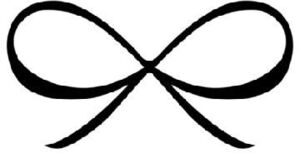

Trade Mark Journal No.2025/044 31 October 2025
WO0000001847573 (3,9,14,18,21,24,25,35)
Office of origin: Benelux Office for Intellectual Property (BOIP)
Date of International Registration:29 November 2024
Date of designation in the UK:
29 November 2024

International priority date claimed: 7 November 2024
(Benelux Office for Intellectual Property (BOIP))
(1513920)
- Class 3
- Perfumery, colognes, toilet water, perfumes, fragrances for personal use, essential oils; nail care products namely, nail polish and nail polish remover; toiletries; dentifrices; antiperspirants, deodorants for personal use; shaving articles namely, shaving gel and shaving cream, after-shave, aftershave lotions and gels; shoe polish and creams; hair dyes; cleaning preparations; cosmetics for animals.
- Class 9
- Photographic, cinematographic and optical apparatus and instruments; optical goods such as protective spectacles, contact lenses; camera cases; holders for portable computers and mobile phones; blank audio tapes, blank audio cassettes, blank video tapes, video cameras; blank video cassettes, blank compact discs, compact discs featuring music, blank laser discs, video disks and magnetic optical discs featuring topics in the fields of fashion, modeling and lifestyles; blank magnetic data carriers, blank recording discs; pre-recording discs featuring topics in the fields of fashion, modeling and lifestyles; computers; computer peripheral equipment; recorded computer programs featuring topics in the fields of fashion, modeling and lifestyles; mouse pads; magnetic coded cards featuring topics in the fields of fashion, modeling and lifestyles; compact discs (audio-video) featuring topics in the fields of fashion, modeling and lifestyles; optical compact discs featuring topics in the fields of fashion, modeling and lifestyles; compact disc players, downloadable electronic publications in the nature of books, magazines, newsletters, brochures and catalogs in the fields of fashion, modeling and lifestyles; pocket calculators; video game cartridges; headphones; loudspeakers.
- Class 14
- Tie tacks, cuff links; precious stones; horological and chronometric instruments namely, watches, wrist watches, straps for wrist watches and clocks, chronographs, chronometers, alarm clocks; precious metals and their alloys.
- Class 18
- Leather and imitations of leather; animal skins; sports and athletic bags; briefcases; suitcases with wheels attached; billfolds; wallets, pocket wallets, key cases, credit card cases of leather; combined money and credit card holders; card cases; walking sticks; whips, harness and saddlery; harness for animals.
- Class 21
- Water bottles, perfume atomizers.
- Class 24
- Face cloths; cloth labels; wall hangings of textiles.
- Class 25
- Footwear, headgear, sportswear, kimonos, shapewear, correcting underwear, boxer shorts.
- Class 35
- Retail store services, and assistance on commercial business in connection with perfumes, cosmetics, clothing, underwear and lingerie, fabrics, bath and bed linen, bags, sunglasses, jewellery, watches, water bottles; the aforesaid services also in connection with franchising; online retail store service by mail order companies in the field of perfumes, cosmetics, clothing, underwear and lingerie, fabrics and textile goods, bath and bed linen, goods made of leather or imitations of leather, bags, sunglasses, jewellery, watches, water bottles; administrative services in respect of closing of franchise agreements in connection with perfumes, cosmetics, clothing, underwear and lingerie, fabrics, bath and bed linen, bags, sunglasses, jewellery, watches, water bottles; assistance in franchised commercial business management; organisation of trade fairs for commercial or advertising purposes; advertising; office functions; representation of goods on communication media, for retail purpose; commercial administration of the licensing of the goods and services of others; promotion for others; sales promotion; personnel management consultancy; administrative services for the relocation of businesses; secretarial services; accounting; rental of vending machines; sponsorship search; all aforementioned services in this class also provided via Internet.
Hunkemöller B.V.
Representative: Novagraaf Nederland B.V., Hoogoorddreef 5, NL-1101 BA Amsterdam, NETHERLANDS